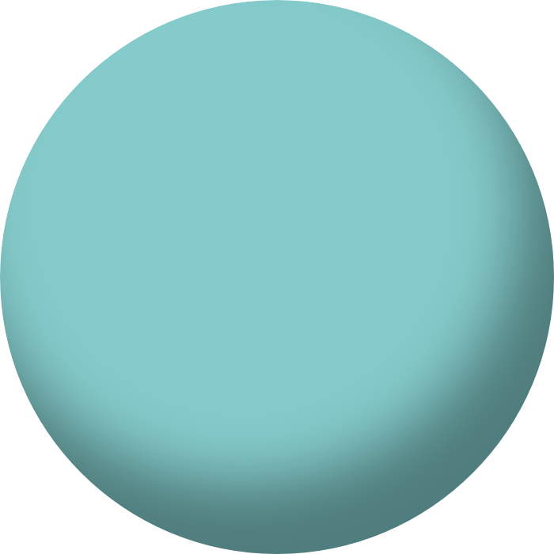
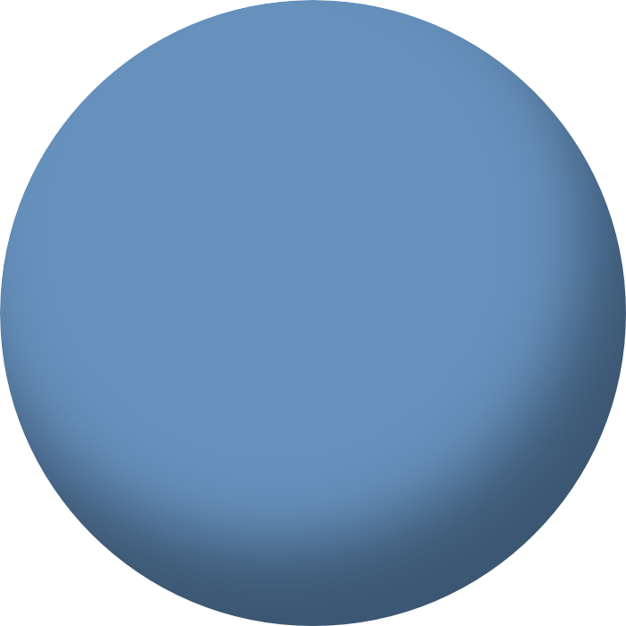
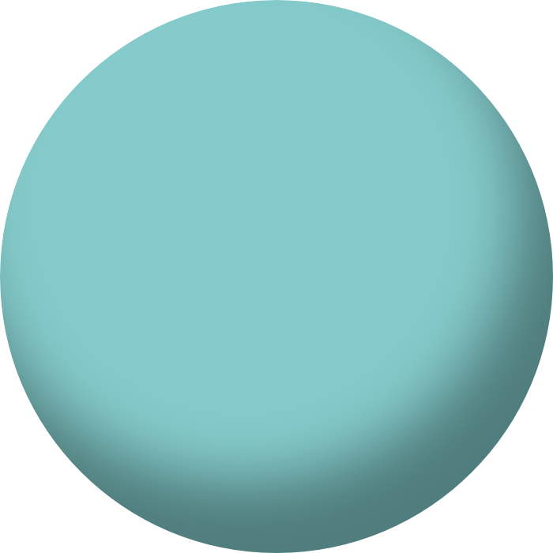
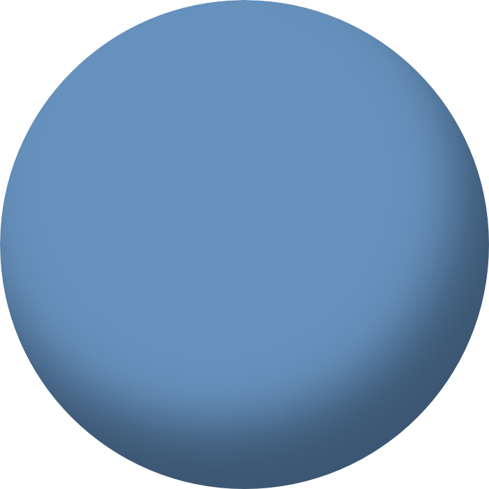

My title here is officially Software Developer, but I've done (and learned) so much more. I've worked on Java Enterprise software, ASP.NET, web design, and iOS design and development. I'm part of the Women in STEM team, which does outreach to local schools. I've acted as software ambassador to the iNet Alliance group, which is attempting to expand our cloud platform to more than just gas detection.
NASA IV&V May 2013-June 2014
In college, I had the honor of working at NASA IV&V. I was part of a small team doing dynamic testing on the Orion MPCV.
In December of 2014, Orion blasted off from Cape Canavaral for it's EFT-1 test flight. It sucessufully landed in the Pacific ocean four hours later. I tuned in to the live stream for most of the flight (even during classed), and watched as Orion moved through each of it's flight stages which I had vigorusly studied and tested during my internship.
While at my university, I was reccommended by my advisor on two separate occasions to professors for undergraduate opportunities. The first was an undergraduate researcher position. I heled a team of professors write a grant proposal to the Department of Homeland Security for the construction of an information sharing system. Our proposal wasn't accepted, but I still learned a lot!
The second was a teaching assistant of CS:310 Programming Languges, where I hosted office hours, graded papers, and administered tests.

 


